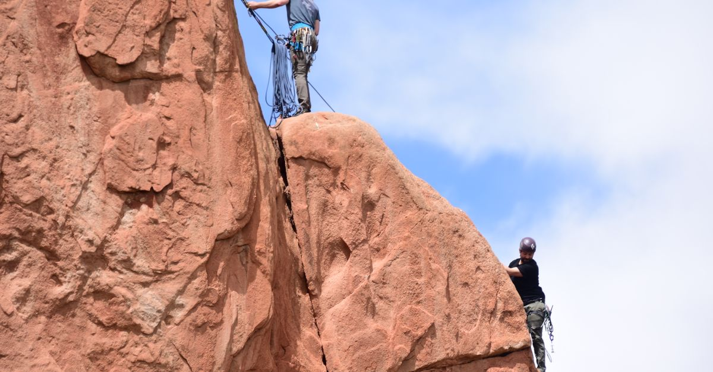
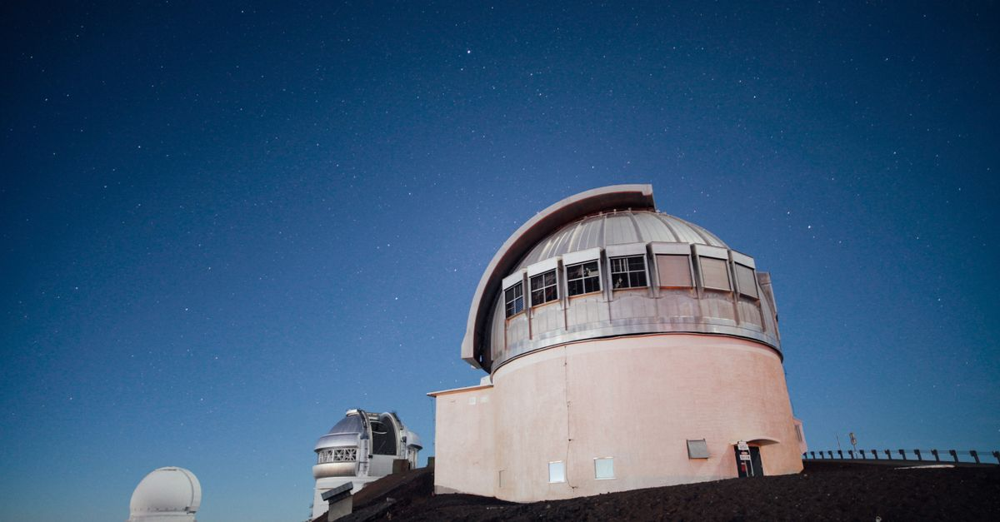
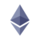

週次市場レポート2026年11月2日（月）

今週の3行まとめ
- 木曜に史上最大の暗号資産ハッキングが起きました。Binance から約 $6.3B が流出し（ブロックチェーン分析企業は北朝鮮系ハッカー集団の犯行と特定）、BTC は $76,326 まで急落。Binance はユーザー資産の約90〜95%をカバー済みと発表し、日曜に出金を再開しています。
- FOMC は予定どおり据え置き — ただし中身はタカ派でした。反対2票は「利下げ」ではなく「利上げ」主張で、議長は先行きの約束（フォワードガイダンス）を明確に拒否。12月利上げの織り込みは直後に86%まで急騰→ハック後のリスクオフで70%へ往復しました。
- 週足は3週連続のライン割れ（−5.4%）。ただし注目すべきは「どこまで売られたか」より「どこで止まったか」 — 週安値 $76,326 は50週移動平均線のわずか +0.7% 手前、かつ6月からの上昇の 38.2% 押しにぴったりの位置で、史上最大のハックの投げを吸収して反発しました。
| 側 | 材料 | 位置づけ |
|---|---|---|
| 弱気 | 週足終値 $78,354 でライン比 −5.4%・3週連続割れ・10月の月足も $80,000 割れ（月間約−7%） | 検証ゾーンの深部へ進行 |
| 弱気 | ETF 10/30 単日 −$643M（今年2番目の流出）・年初来純流入は $1.0B→$0.37B へ 6割強が消失 | 「2026年はほぼトントン」まで後退。マイナス転落が象徴的な定点に |
| 弱気 | BTC 大量保有の米上場企業が定点観測開始以来初の「購入ゼロ」週＋CFO 退任発表 | 恒常買い主体の一角が停止。資金は優先株買い戻し（$205M）へ完全傾斜 |
| 弱気 | 12月利上げ織り込み 70%・FOMC 反対2票はタカ派方向 | 金利の逆風はベースケースとして継続 |
| 強気 | 週安値 $76,326 ＝ 50週線（$75.7K帯）の +0.7% 手前・38.2% 押し（$76,090）とほぼ一致で下げ止まり反発 | 最大級の悪材料でも支持帯が守られた、という実測 |
| 強気 | ハックを挟んでも ETF は月〜木4営業日連続の流入（+$441M）・Binance は 90〜95% カバー＋出金再開 | 「取引所のリスク」と「BTC そのもののリスク」は別物 — ETF 保有者は Binance への直接の持ち分なし |
| 両義的 | 信用スプレッドは 3.40→3.14% へ急改善した直後、ハック当日に 3.26% へ反発 | ピークアウトか再燃か、判定は来週へ持ち越し |
| 両義的 | 金も週 −2.5% で $4,000 割れ再定着（換金売りの日は金も売られる・2週連続） | 逃げ場は今週も米国債だけだった |
今週の一行: 「FOMC は据え置き・ただし反対2票は利上げ主張のタカ派。それでも週の主役は史上最大の Binance ハック $6.3B — BTC は $76,326 まで売られ3週連続のライン割れ。だが止まった場所は 50週線の +0.7% 手前・38.2% 押しちょうど。『どこまで売られたか』より『どこで止まったか』に情報がある週」。
講師のコメント — 配信お休みにつき、書面でお伝えします
以下は講師ご本人のコメントです（今週のレポートと TIPS を確認した上での現時点の見解・2026-11-02）。
暗号資産市場の現状とビットコイン
バイナンスのハッキングや中間選挙を控え、マクロ市場的にも金利、原油、スプレッドなどが騒がれ始めています。以前からお話ししていた懸念が表面化してきた状況ではありますが、現状はまだ想定の範囲内です。
ビットコインも50週移動平均線まで落ちることなく、綺麗な調整を行っているという判断は変わっていません。今日の TIPS でも直近の下げについてセオリー的な観点を記載していますが、本当にセオリー通り綺麗に決まっていることがよく分かります。そのため、今回のハッキング等も含めてあまり悲観はしていません。
ただし、直近の最重要イベントである中間選挙の結果には警戒が必要です。サプライズが起きた場合は今後の方向性を決定づけるほどの大きな動きが想定されます。事前の予想通りの結果に収まれば、ビットコインはむしろ回復傾向に向かうと見ていますが、引き続き警戒は怠らず、基本的には規定路線の中にいると捉えておいてください。
イーサリアムと今週のシグナル
イーサリアムについてもチャートを見ていただければ分かりますが、直近の底値から高値にかけて一気に上昇した分のちょうど50%（半値）まで落ち、そこからリバウンドしている状態です。非常に良い水準で下げ止まって反発しているため、過度な警戒はしておらず、むしろ引き続き買いを進めています。
先月分については、本当は 75,000 ドルまで下がったタイミングで買いたかったのですが、指値を見つつ時間切れとなったため、30日（31日）に10月の予算分を購入完了しました。
いつも出している「3つのシグナル」に関しても、今週は少し改善傾向にあるため、全体としてまだ大丈夫だと判断しています。
本日の TIPS の見どころ
今日の TIPS で解説している「空売りの構造」を今のビットコインの動きに当てはめると、非常にドンピシャで当てはまっています。今回のセオリーから見ると、これは下落トレンドに転じるのではなく「空売り失敗」となり、むしろ上昇への反転につながるような読み方もできます。少し踏み込んだ内容ですが、ぜひご覧いただければと思います。
事務連絡とお知らせ
本日、声がひどく嗄れてしまっております。11月に入り新しい「卒業生プラン」の発表を予定していましたが、急遽来週に延期とさせてください。季節の変わり目ですので、皆さまも体調には十分お気をつけください。
個別相談をご予約いただいている方へ：熱などの症状はなく、声が出にくいだけですので、予定通り実施いたします。お聞き苦しい低音でご心配をおかけするかもしれませんが、キャンセル等はなさらずそのままお待ちいただけますと幸いです。
※ 本コメント中の銘柄・購入に関する記述は講師自身の投資行動の記録であり、売買をすすめるものではありません。
答え合わせ — 3週連続割れ。ただし「止まった場所」に情報がある

週足は3週連続の不合格で、割れ幅は −5.4% へ再拡大。しかし今週の主役は割れ幅ではありません。講師が先週置いた $75,000 の指値、50週移動平均線、38.2% 押し — 教科書的な支持帯の直前で、史上最大の悪材料による投げが止まったことです。
- 判定の結果
- 3週連続の不合格。終値 $78,354（CoinGecko $78,294）はライン比 −$4,460（−5.4%）。割れ幅は −0.96% → −3.2% → −5.4% と3段階で拡大しています。
- 止まった場所
- 週安値 $76,326 は ①50週移動平均線（実測 $75,691〜75,775）の +0.7% 手前 ②38.2% 押し $76,090 とほぼ一致 ③講師の指値 $75,000 の $1,326 上。「50週線攻防」は実際にタッチ寸前まで行って、今週時点では守られました。
- 講師アクションの答え合わせ
- 先週の「$75,000 指値」は未約定 — 史上最大のハックの投げでも約1.7%届きませんでした。50週線帯のすぐ下に置いた指値が「あと一歩」まで引きつけた、という実測記録です（約定判断・再設定は講師から）。
- シナリオの現在地
- 講師想定は「③もう底を打った」60% ／「①+② まだ下がある」40%（据え置き）。6月からの上昇に対する調整はまだ 38.2% 押しの範囲内＝「上昇トレンド内の通常調整」の定義は崩れていません。評価の更新は本日の配信で講師からお伝えします。
10月の調整をジグザグ（A-B-C）と見る場合: A波 $86,999→$79,800（−$7,199）、B波 $84,898 への戻し（70.8% 戻し＝典型レンジ内）、C波は進行中で今週安値まで −$8,572 ＝ A波の1.19倍。最小要件の「C＝A」（$77,699）は金曜に通過済みで、次のフィボ目標「C＝1.272×A」＝ $75,741 は 50週線とほぼ同じ場所を指します。
読みは2つ — (a) 最小要件充足＋重複支持帯タッチで「C波は完了接近/完了」: B波高値 $84,898 の奪回でこの読みが優勢化。(b) ハック後の反発は自律反発に過ぎず $75.7K→$73.3K へ延長: 今週安値 $76,326 割れでこちらが優勢化。どちらに進むかの分岐が、まさに今週の 50週線帯攻防です（カウントの確定は講師から）。
上のエリオットが「調整はどこで終わるか」の地図なら、米国株の古典が描いた「天井はどう作られるか」の地図（ヘッド・アンド・ショルダーズ・トップの完成プロセス）もあわせて持っておくと、いまの分岐が立体的に見えます。実は週足ではこの図、2025年11月〜今年6月の相場で一度「完成」していました — そして日足ではいま「③に似た形・成否待ち」。原典図版と実データの注釈付きチャート2枚で、専用ページに詳しくまとめました。
👉 TIPS解説: 「空売りの構造」を読む — 天井はどう作られ、いまの BTC はどこにいるか（結論: 流派が違っても見るべきラインは同じ2本 — 上 $81,800帯／下 $76,326）
FOMC とハック — 金融政策の週のはずが、取引所信用リスクの週になった

水曜の FOMC、木曜のハック、そして明日は中間選挙 — 3つの大イベントが並んだ週です。順番に整理します。
- FOMC の答え合わせ
- 結果は据え置き（3.75〜4.00%・織り込みどおり）。サプライズは反対2票が「利上げ」主張だったことです（声明原文で確認: 経済活動は "strong"・インフレは "elevated"）。FRB のウォーシュ議長は会見で原油高とインフレに言及しつつ先行きの約束を明確に拒否 — 12月利上げの織り込みは直後に 81〜86% へ急騰し、ハック後のリスクオフで 70%（CME系では 72〜75%）へ往復しました。12月 FOMC（12/8-9）に向け、金利の逆風はベースケースです。
- ハックの事実関係
- 10/29（木）、Binance のホットウォレットから約 $6.3B が10チェーン横断で約20分のうちに流出 — 金額として史上最大の暗号資産ハッキングです。ブロックチェーン分析企業は北朝鮮系ハッカー集団の犯行と高い確度で特定（FBI は対応への関与を表明・自身の帰属判断は未発表）。約 $3B は凍結済みと発表されています。
- Binance の対応
- 「ユーザー資産の約90〜95%をカバー済み・全損失を補填する」と発表し、11/1（日）に BTC ネットワークから段階的に出金を再開。再開後約9.5時間の純流出は約 $3.64B でした。
- BTC への波及の読み方
- 重要な区別は「取引所のリスク」と「BTC そのもののリスク」は別物だということです。ETF の保有者は Binance への直接の持ち分を持ちません。実際、ハック当日を挟んでも ETF は月〜木で4営業日連続の流入でした（流出は翌金曜に集中）。一方で、発行体が凍結できるステーブルコインは回収が効き、BTC は効かない — という資産ごとの構造差も今回あらためて論点になっています。
警報器ダッシュボード — 「赤2・黄1」から黄色寄りへ半歩後退、ただし判定は持ち越し
黒い縦線が先週の位置、色付きバーが今週の位置です。②信用スプレッドは3.5% 台への続伸なし＝「質的悪化の加速」は否定され、一転してピーク比 −26bp の急改善 — ところがハック当日に反発しました。
外部リサーチの視点 — 明日は「理論上の刊行日」。出れば最優先で差分をお届けします
講師が定点観測している外部リサーチ（隔週レポート）は約8週間（55日超）未公開のままです。配信フィードは稼働しており、隔週刊の周期どおりなら明日 11/3 が理論上の次回刊行日 — BTC が50週線攻防まで来た今、前号の「底値判定」の答え合わせが最大の注目点です。運営者の SNS アカウントの月次生存確認（11月分）は実施済み・存続を確認しています。
| 前号の枠組み | 今週までの実際 | 評価 |
|---|---|---|
| 重要サポートが耐えれば「7月安値＝底」が確定 | 週足3週連続割れ（−5.4%）・ただし週安値 $76,326 は 50週線 +0.7% 手前で反発 | 「耐えたか」の判定がまさに今週の攻防に — 次号最優先の論点 |
| 「50週線への最初の突破試行は通常失敗する」 | 終値は50週線の +3.4% 上（+5.3% → +3.4% へ縮小・タッチ寸前） | 「試行失敗」判定の瀬戸際。ただし今週時点では定着を維持 |
| 「年内の追加利上げは生きている」（少数派の読み） | FOMC 反対2票が利上げ主張・12月織り込み 70〜75% | 的中方向がさらに強まった（タカ派の芽は当局内にも） |
| Q4 は金がビットコインに優位（リスクオフ想定） | 金 週 −2.5%（$4,000 割れ再定着）vs BTC 週 −2.2% | 3週連続で「BTC≧金」— 換金売り局面では安全資産も売られる |
急騰銘柄は今週ゼロ — 「教材」の答え合わせと講師銘柄フォロー
時価総額上位100位以内で 7日間 +20% 超は、3件 → 1件 → 今週は0件。ハック週のリスクオフで物色が完全に止まったこと自体が市況のシグナルです。代わりに、ここ数週間の「教材」たちの続報がまとまって出ました。
「期待先行→剥落」教材のアップデート（1件の訂正を含む）
| 銘柄 | 先週までの判定 | 今週の実測 | 更新後の判定 |
|---|---|---|---|
 BTW BTW | アンロック前倒し剥落 −36% | 本日 11/2 がアンロック当日 — 当日だけで −16%（$0.92） | 仮判定「追加崩落型」 事前消化では吸収しきれず。最終判定は 11/5 までの値持ちで |
| ZRO | 遅発剥落型（$1.77 割れ） | 11/1 に一時 $1.92 まで反発し $1.77 を一時奪回・終値ベースの定着は未確定（現在ちょうど $1.77 攻防） | 但し書き条件付き維持 終値で定着すれば「剥落型」判定を解除 |
| AAVE | 「コール無音のまま全消滅」 | 訂正: 四半期コールは 10/22 に実施済みと判明。「Aavenomics 3.0 を soon」と発表されたが日程なし・価格は無反応のまま | 教材の中身を訂正 「無音で消滅」ではなく「コールが開かれても、日程のない "soon" では価格は動かない」が正しい教訓でした — 誤りは誤りとしてご報告します |
講師注目銘柄フォロー（配信で言及された銘柄）
| 銘柄 | 先週 | 今週 | 状況 |
|---|---|---|---|
| BTC | $79,650 | $77,911（週 −2.2%） | $75,000 指値は未約定 — ハックの投げでも約1.7%届かず（週安値 $76,326）。50週線帯のすぐ下に置いた指値が「あと一歩」まで引きつけた実測記録に |
 ETH | $2,305 | $2,287（週 −2.1〜2.3%） | ハック当日に $2,200 を瞬間下抜け（安値 $2,174〜2,179）して即回復。講師の目安の半値水準 $2,150 まであと約1.3%・$2,000 は未到達。週高値は FOMC 日の $2,392 |
| LDO | $0.362 | $0.335（週 −7.4〜9.3%） | クローズ判断（$0.3976）比では −15.9% ＝2週連続で「ルール通りのクローズ」が下げ回避として機能。一方、先週の買い戻し水準比では週中に −14.6% の含み損を経由して −7% 台へ戻した形（評価・判断は講師から） |
| ONDO | $0.400 | $0.395（週 −0.8〜2.8%） | 週安値 $0.364 を経てほぼ復帰。LDO より下方ベータが浅く、買い戻し水準比ではほぼ横ばいまで戻しています |
そのほか: BTC 大量保有の米上場企業は初の「購入ゼロ」週（優先株買い戻し $205M へ完全傾斜・CFO 退任発表・優先株の日次配当化は賛成約99%で可決）。BNB はハックの直撃で週 −7.1%（$699）。※ 個別銘柄の記載は市場観察の記録であり、売買をすすめるものではありません。
来週に向けて — 選挙・雇用統計・50週線攻防の週
答えが出るイベント（日付順）
- 明日 11/3（火）米中間選挙 — 前夜オッズは下院民主 94%・上院民主 72%・スイープ 70.5%。織り込みが偏っているぶん、サプライズ（上院の共和維持）が出た場合の反応が非対称に大きい点に注意。
- 11/5（木）BTW アンロックの最終判定 — 当日 −16% の「追加崩落型」仮判定が確定するか。
- 11/6（金）米雇用統計 — 12月利上げ織り込み 70〜75% の最初の試金石（12月 FOMC は 12/8-9）。
- 11/8（日）週足終値 — 4週連続割れか。下は $76,326（今週安値・38.2%押し）→ 50週線 $75.7K帯 → $72,598（50%押し）。上は $80,000 → $81,500 → $84,898（B波高値・エリオット(a)説の優勢化条件）。講師の $75,000 指値の約定有無も答え合わせ対象です。
- 11/9（月）米上院が復帰 — 暗号資産の市場構造法案の審議はここから。選挙結果とセットで規制の時間軸が決まります。
警報器の定点観測
- 最優先: 信用スプレッド — 「3.14% への急改善 → ハック日 3.26% 反発」の決着（3.4% 再接近なら再格上げ）
- 10年金利 4.92% — 4.9%台定着か、雇用統計で5%台復帰か
- 原油 $104 — $100 定着5週目か割れか（ホルムズ海峡の攻撃再開の続報も記録継続）
そのほか
- Binance ハック続報: 出金再開後の純流出の推移・カバー率と被害額の確定・資金追跡の続報・BTC の取引所残高変化（自己保管へのシフトが起きるか）
- ETF: 10/30 の −$643M が単発か。年初来純流入 +$0.37B がマイナス転落するかが象徴的な定点
- 金 $3,900 攻防（換金売り3週目か反発か）／外部リサーチの新号検知（理論刊行日は明日）